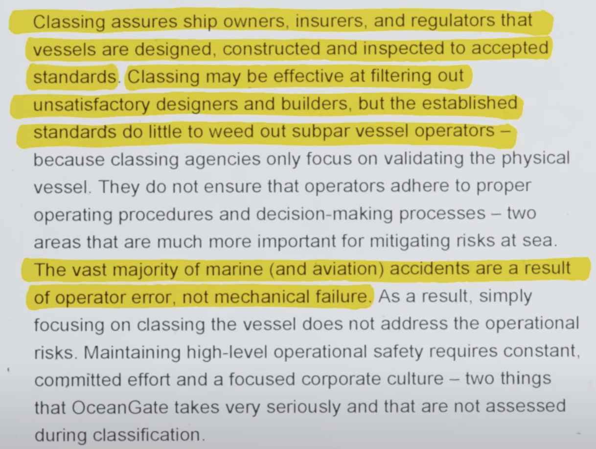
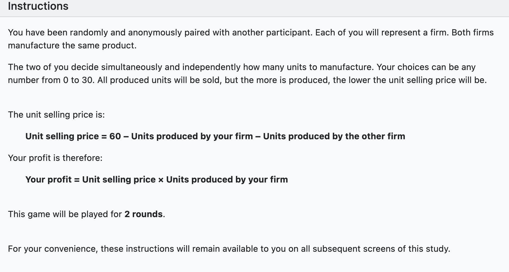

<!DOCTYPE html>
<html lang="en">

<head>
  <meta charset="utf-8" />
  <meta name="viewport" content="width=device-width, initial-scale=1.0, maximum-scale=1.0, user-scalable=no" />

  <title>Economics Basics</title>
  <link rel="shortcut icon" href="./../../assets/favicon.ico" />
  <link rel="stylesheet" href="./../../dist/reset.css" />
  <link rel="stylesheet" href="./../../dist/reveal.css" />
  <link rel="stylesheet" href="./../../assets/styles/PBA-theme.css" id="theme" />
  <link rel="stylesheet" href="./../../css/highlight/shades-of-purple.css" />

  <link rel="stylesheet" href="./../.././assets/styles/custom-classes.css" />

</head>

<body class="site">
  <header class="site-header">
    <!-- This logo is a link only on the watching server, not the production build -->
    <a href="">
      
    </a>
  </header>
  <main class="reveal">
    <article class="slides">
      <section  data-markdown><script type="text/template">

# Economics Module
</script></section><section  data-markdown><script type="text/template">
# Overview

<pba-flex center>

<ul>
<li class="fragment">Economics Basics</li>
<li class="fragment">Game Theory Basics</li>
<li class="fragment">Price Finding Mechanisms</li>
<li class="fragment">Collective Decision Making</li>
</ul>

</pba-flex>

<aside class="notes"><ul>
<li>Focus on the pure economic concepts and not diving into blockchain yet.</li>
<li>That is covered by another lecture doing so.</li>
<li>Economics of polkadot for the founders track later.</li>
<li>Interactive: Ask questions!</li>
</ul>
</aside></script></section><section  data-markdown><script type="text/template">
# Economics Basics
</script></section><section  data-markdown><script type="text/template">
<pba-cols>
<pba-col>
<pba-flex center>

#### Cryptography

- Provides assurances about the conduct of machines
- Objective in nature
- Promotes deterministic actions
- Serves as a toolbox to secure certain actions in the digital world.

</pba-flex>
</pba-col>
<pba-col>
<pba-flex center>

#### Economics

- Offers predictions about the actions of people
- Intrinsically subjective
- Driven by individual preferences
- Serves as a toolbox to understand which actions humans are likely to undertake.

</pba-flex>
</pba-col>
</pba-cols>

🤖$~~~$ 🤝 $~~~$👪

<aside class="notes"><ul>
<li>Cryptography would be meaningless without humans using it.</li>
<li>Crypto &amp; Econ pair well! Together they are the toolbox to design unstoppable systems.</li>
<li>They have a great symphony: where cryptography&#39;s has boundaries, economics offers solutions and vice versa.</li>
</ul>
</aside></script></section><section  data-markdown><script type="text/template">
## Why are economic concepts<br/>important?

<pba-flex center>

<ul>
<li class="fragment">help make better decisions in daily- and professional life.</li>
<li class="fragment">model & reason about how others make decisions.</li>
<li class="fragment">better understand (crypto-)economic protocols.</li>
<li class="fragment">understand the broader context of Web3/blockchain.</li>
</ul>

</pba-flex>

<aside class="notes"><ul>
<li>It is also important to understand the limits of these economic concepts and when they might not work as intended.</li>
</ul>
</aside></script></section><section  data-markdown><script type="text/template">
## Outline

<pba-flex center>

<ul>
<li class="fragment"><strong>Lesson</strong>
    <ul>
    <li class="fragment">Incentives: What motivates others to do things?</li>
    <li class="fragment">Demand & Supply: Market Equilibrium, Influences, and Elasticity.</li>
    <li class="fragment">Market Forms: Monopoly, Oligopoly, and Perfect Competition.</li>
    <li class="fragment">Economics of Specialization: Comparative Advantage, Opportunity Costs, Gains from Trade.</li>
    <li class="fragment">Time as Ultimate Resource: The interaction between Time and Value.</li>
    <li class="fragment">Behavioral Biases: Where human decision making might be different than traditional economic theories predict.</li>
    </ul>
</li>
<li class="fragment"><strong>Discussion & Workshop</strong>
    <ul>
    <li class="fragment">Discussions to foster and apply concepts we learned.</li>
    <li class="fragment">Hands-on applications.</li>
    </ul>
</li>
</ul>

</pba-flex>
</script></section><section  data-markdown><script type="text/template">
## Guiding Human Behavior

> An incentive is a bullet, a key:<br/>an often tiny object with astonishing power to change a situation.<br/>-- Steven Levitt --

<aside class="notes"><ul>
<li>Human behavior is driven by incentives.</li>
<li>The aggregation of these behaviors lead to societies.</li>
<li>Carefully designing incentives lays the ground for functioning systems.</li>
<li>You might be asked to implement certain protocols, which you have to judge if they make sense / can be improved.</li>
</ul>
</aside></script></section><section  data-markdown><script type="text/template">
## Understanding Incentives

<pba-flex center>

<ul>
<li class="fragment">Motivate individuals or groups to perform certain actions.</li>
<li class="fragment">Historically, incentives were designed to influence human behavior both on a macroeconomic and microeconomic level.</li>
<li class="fragment">Most commonly, people refer to money, that fall under the umbrella of extrinsic incentives.</li>
<li class="fragment">But not all incentives are monetary!</li>
</ul>

</pba-flex>
</script></section><section  data-markdown><script type="text/template">
## Different Types of Economic Incentives

<pba-flex center>

<ul>
<li class="fragment">In a workplace setting (microeconomic level), employees are often motivated by various forms of economic incentives:
    <ul>
    <li class="fragment">Flat Rate: A fixed amount of salary irrespective of performance.</li>
    <li class="fragment">Piece Rate: Pay based on the quantity of output produced.</li>
    <li class="fragment">Bonus: Additional rewards for excellent performance.</li>
    <li class="fragment">Relative Incentives: Rewards relative to the performance of others (competitive incentives).</li>
    </ul>
</li>
</ul>

</pba-flex>

<aside class="notes"><ul>
<li><strong>Question: What are the advantages / disadvantages of those incentives?</strong></li>
</ul>
</aside></script></section><section  data-markdown><script type="text/template">
## Rationality in Economics

<pba-flex center>

<ul>
<li class="fragment">Economic theories often assume rationality, implying that actors:
    <ul>
    <li class="fragment">Are primarily driven by monetary gains (payoff maximization).</li>
    <li class="fragment">Act in self-interest.</li>
    <li class="fragment">Have unlimited cognitive resources.</li>
    </ul>
</li>
<li class="fragment">Remark: In this, all factors can be translated into monetary terms.</li>
</ul>

</pba-flex>
</script></section><section  data-markdown><script type="text/template">
## Incentives often work well

<pba-flex center>

<ul>
<li class="fragment">Interest rates set by central banks.</li>
<li class="fragment">Lower rates: Encourage borrowing and investing.</li>
<li class="fragment">Higher rates: Slow down inflation and stabilize the economy.</li>
</ul>

</pba-flex>
</script></section><section  data-markdown><script type="text/template">
## Incentives can Backfire

<pba-flex center>

<ul>
<li class="fragment">In India during British rule, the British Government was concerned about the large number of venomous Cobras.
    <ul>
    <li class="fragment">They offered a bounty for every dead cobra.</li>
    <li class="fragment">People started to breed cobras at home to sell them.</li>
    <li class="fragment">Once the government stopped the program, breeders released the cobras causing larger numbers than before.</li>
    </ul>
</li>
</ul>

</pba-flex>
</script></section><section  data-markdown><script type="text/template">
## Goodhart's Law

> When a measure becomes a target, it ceases to be a good measure
</script></section><section  data-markdown><script type="text/template">
## Crowding Out

<pba-flex center>

<ul>
<li class="fragment">In Haifa (Israel) parents often got their kids late from day care.</li>
    <ul>
    <li class="fragment">This caused childcare workers frustration.</li>
    <li class="fragment">Idea: fine parents for getting their kids late.</li>
    <li class="fragment">The program was rolled out in some day cares and not others.</li>
    </ul>
<li class="fragment">Traditional economic theory:</li>
    <ul>
    <li class="fragment">Less or at least equally many late parents.</li>
    <li class="fragment">BUT: The opposite happened, the number of late parents even increased.</li>
    <li class="fragment">After the fine was abolished, parents still were more late.</li>
    </ul>
</li>
<li class="fragment">Extrinsic motivation can crowd out intrinsic motivation.</li>
</ul>

</pba-flex>

<aside class="notes"><ul>
<li><strong>Question: Why did that happen?</strong></li>
<li>Gneezy &amp; Rustichini (2000): A fine is a price.</li>
</ul>
</aside></script></section><section  data-markdown><script type="text/template">
## The Power of Intrinsic Incentives

<pba-flex center>

<ul>
<li class="fragment">Beyond monetary gain, people are also motivated by intrinsic factors.</li>
    <ul>
    <li class="fragment">Social preferences (Reciprocity, Fairness, Social Norms, Inequality Aversion, Altruism).</li>
    <li class="fragment">Personal morals, and deeply-held beliefs.</li>
    </ul>
<li class="fragment">Economic models often fail to account for these motivations, leading to unexpected outcomes in real-world applications.</li>
</ul>

</pba-flex>
</script></section><section  data-markdown><script type="text/template">
## From Humans to Automated Agents

<pba-flex center>
<ul>
<li class="fragment">The digital age emphasizes the importance of automated actors in our economic systems.</li>
<li class="fragment">Algorithms and bots, respond to incentives, often financial ones, automatically.</li>
<li class="fragment">This shifts the application of incentives beyond a human context and into the realm of digital systems and automated processes.</li>
</ul>
</pba-flex>

<aside class="notes"><ul>
<li>Still, not always financial incentives - reputation scores</li>
<li>While automated agents existed for a while, they become much more accessible for everybody due to blockchain technology</li>
<li>Your electric car might soon have a wallet that automatically pays for charging at a red light.</li>
<li>Or you might be able to pay for priority green lights.</li>
</ul>
</aside></script></section><section  data-markdown><script type="text/template">
## Conclusion

<pba-flex center>

<ul>
<li class="fragment">Incentives continue to be fundamental to interactions in society, whether among humans or between automated systems.</li>
<li class="fragment">As we understand more about incentives in different contexts, we can better design them to influence behavior effectively.</li>
<li class="fragment">Intrinsic motivations remain important, but in certain contexts, like automated systems, monetary incentives also play a significant role.</li>
<li class="fragment">The challenge is to balance these factors to achieve the desired outcomes.</li>
</ul>

</pba-flex>
</script></section><section  data-markdown><script type="text/template">
## Demand & Supply: The Pillars of Market Equilibrium

<pba-flex center>

<ul>
<li class="fragment">A common model to help predict and rationalize the price<br/>which emerges from a market.</li>
<li class="fragment">Can be used to (gu)estimate the quantity<br/>of produced goods vs. their market prices.</li>
</ul>

</pba-flex>

<aside class="notes"><ul>
<li>A famous artist dies and her art increases in price.</li>
<li>An unusually nice summer reduces hotel prices in popular vacations destinations.</li>
</ul>
</aside></script></section><section  data-markdown><script type="text/template">
## Law of Demand: A Basic Principle

- When prices increase, quantity demanded of a good (generally) decreases.

<aside class="notes"><ul>
<li><strong>Question: Anybody know exceptions?</strong></li>
<li>Exception are &quot;Veblen goods&quot; where demand increases when price increases.
These are typically luxury goods that signal something (e.g. status, reputation) in addition to being useful to consumption.
Examples are jewelry, luxury cars, etc.</li>
<li>This is not a contradiction to the law of demand because the good&#39;s social value depends on the price; i.e., the good &quot;changes&quot; and becomes more desirable as the price increases.</li>
</ul>
</aside></script></section><section  data-markdown><script type="text/template">
## Visualizing Demand: The Demand Curve


<aside class="notes"><ul>
<li><strong>Question: What influences the aggregate market demand?</strong></li>
<li>The market demand is the sum of all individual curves.</li>
</ul>
</aside></script></section><section  data-markdown><script type="text/template">
## Influences on demand?

<pba-flex center>

<ul>
<li class="fragment">Price (Demand moves along the curve)</li>
<li class="fragment">Size of consumer base</li>
<li class="fragment">Average disposable income of consumer base</li>
<li class="fragment">Price of substitution goods</li>
<li class="fragment">Preferences prevalent within consumer base</li>
<li class="fragment">Expectations prevalent within consumer base</li>
</ul>

</pba-flex>

<aside class="notes"><ul>
<li>In the ice cream example, a substitution good could be frozen yoghurt: if its price goes down, the demand for ice cream will decrease.</li>
<li>If people&#39;s appetite for ice cream increases (perhaps via advertisement), the demand will increase.</li>
<li>In people expect a shortage of ice cream in the near future, the demand will increase immediately.</li>
</ul>
</aside></script></section><section  data-markdown><script type="text/template">
## Moving the demand curve


</script></section><section  data-markdown><script type="text/template">
## Law of Supply: The Other Side of the Coin

- If the price of a good increases, the quantity supplied also increases

(because suppliers can make more profit!).

<aside class="notes"><ul>
<li>That is, assuming that suppliers manage to sell all produced goods at said price.</li>
<li>For example, if the ice cream price increases the store will hire a second employee to sell more scoops per hour.</li>
<li>As another example, some petroleum deposits are easier and cheaper to extract than others, so some deposits will be extracted only if the oil price is above a certain threshold.</li>
</ul>
</aside></script></section><section  data-markdown><script type="text/template">
## Demand and Supply Interplay: Market Equilibrium


- What happens when Price is higher than the Eq. Price?
- What if the Quantity is lower than the Eq. Quantity?
- Moving either supply or demand leads to new Eq.

<aside class="notes"><ul>
<li>Where the curves meet we obtain a point of equilibrium, which establishes a market quantity and a market price.</li>
<li>If price is higher than equilibrium price, there is more supply than demand, so some goods remain unsold, and sellers will be forced to reduce the price to get rid of their stock.
Similarly if the price is lower than equilibrium price, there is more demand than supply, which leads to shortages of the good; sellers will notice this and increase the price.
Hence, we always converge to the equilibrium price.</li>
<li>Similarly, if the quantity supplied is too low, there is a business opportunity to supply more unit of the good and make a profit, so eventually someone will increase the supply quantity.</li>
</ul>
</aside></script></section><section  data-markdown><script type="text/template">
## Elasticity

<pba-flex center>

<ul>
<li class="fragment">Measures how much buyers and sellers respond to changes in market conditions.</li>
<li class="fragment">Sensitivity of quantity demanded or supplied to changes in price.</li>
    <ul>
    <li class="fragment">High elasticity: small price changes have large impact on quantity demanded or supplied.</li>
    <li class="fragment">Low elasticity (== inelasticity): price changes do not affect quantity demanded or supplied.</li>
    </ul>
</ul>

</pba-flex>

<aside class="notes"><ul>
<li>Draw a diagram with price on y and quantity on x and draw an almost vertical line tilted towards the left.<ul>
<li>Demand for Gasoline.
Low elasticity: If price goes up people buy only a little less, if price goes up they only buy a little more.</li>
</ul>
</li>
<li>High Elasticity: luxury goods, where buyers can easily adjust their consumption.</li>
<li>Low Elasticity: essential goods such as energy / medicine.</li>
</ul>
</aside></script></section><section  data-markdown><script type="text/template">
## Conclusion: The Dynamics of Demand and Supply

<pba-flex center>

<ul>
<li class="fragment">Demand/supply model forces in markets and can be used to estimate equilibrium quantity/price.</li>
<li class="fragment">All other things being equal:
    <ul>
    <li class="fragment">demand decreases with increasing price.</li>
    <li class="fragment">supply increases with increasing price.</li>
    </ul>
</li>
<li class="fragment">There are different factors influencing supply & demand curves.
    <ul>
    <li class="fragment">Elasticity.</li>
    <li class="fragment">Some shift the equilibrium on the curve.</li>
    <li class="fragment">Others move the entire curves.</li>
    </ul>
</li>
</ul>

</pba-flex>
</script></section><section  data-markdown><script type="text/template">
## Market forms

### (Or: why monopoly bad?)

<pba-flex center>

<ul>
<li class="fragment">Typically, economists distinguish between three market forms.
    <ul>
    <li class="fragment">Perfect competition: Many firms, many consumers.</li>
    <li class="fragment">Oligopoly: Few firms, many consumers.</li>
    <li class="fragment">Monopoly: One firm, many consumers.</li>
    </ul>
</li>
<li class="fragment">The more competition a firm faces, the less market power it has.</li>
<li class="fragment">Market power: ability to affect the price (through choosing a certain production level).</li>
</ul>

</pba-flex>

<aside class="notes"><ul>
<li>Special form of Oligopoly is the Duopoly with two firms, something that we see later.</li>
</ul>
</aside></script></section><section  data-markdown><script type="text/template">
## Market Form Examples

<pba-flex center>

<ul>
<li class="fragment">Monopoly:
    <ul>
    <li class="fragment">Postal services in many European countries.</li>
    <li class="fragment">Railway services in many European countries.</li>
    </ul>
</li>
<li class="fragment">Oligopoly:
    <ul>
    <li class="fragment">Cloud provider (AWS, Google, ...)</li>
    <li class="fragment">Mobile phone service.</li>
    </ul>
</li>
<li class="fragment">Perfect Competition:
    <ul>
    <li class="fragment">Consumer products with low barrier to entry (e.g., kebab stand in Berlin, espresso bar in Italy)</li>
    </ul>
</li>
</ul>

</pba-flex>
</script></section><section  data-markdown><script type="text/template">
## Why discuss this?

<pba-flex center>

<ul>
<li class="fragment">Current web2 landscape consists of several firms with a lot of market power in their respective market segment.</li>
<li class="fragment">We want to understand, from an economic perspective, why too much market power is not a good thing.</li>
</ul>

</pba-flex>
</script></section><section  data-markdown><script type="text/template">
## Perfect Competition

<pba-flex center>

<ul>
<li class="fragment">Under perfect competition ...
    <ul>
    <li class="fragment">there are so many firms that a single firm's production quantity does not affect market price.</li>
    <li class="fragment">the marginal costs (cost of one additional unit) of production equals the market price.</li>
    <li class="fragment">firms have 0 profit.</li>
    </ul>
</li>
</ul>

</pba-flex>

<aside class="notes"><ul>
<li>This makes sense: The firm produces up to the point where an additional unit costs exactly what it gets for it on the market.</li>
<li>Notice that having the market price be equal to the marginal production costs is pretty surprising, as it is ideal from a point of view of society welfare, even though every firm is acting selfishly.</li>
<li>In this perfect world, firms will have zero economic profit, meaning they make just enough money to cover production costs and keep the company running.</li>
</ul>
</aside></script></section><section  data-markdown><script type="text/template">
## Monopoly

<pba-flex center>

<ul>
<li class="fragment">Monopolist: single seller of the good or service, serves the entire market.</li>
<li class="fragment">Market characterized by a high barrier of entry (e.g. big investment, legal restrictions).</li>
<li class="fragment">Monopolist is therefore sole price-setter and serves only to maximize their own profits.</li>
<li class="fragment">This leads to sub-optimal pricing and sub-optimal society welfare: consumers either pay more than they should ("monopolist tax") or are excluded from market.</li>
</ul>

</pba-flex>
</script></section><section  data-markdown><script type="text/template">
## Oligopolies

<pba-flex center>

<ul>
<li class="fragment">Oligopolies are somewhere between monopolies and perfect competition.</li>
<li class="fragment">Because of the competition between firms
    <ul>
    <li class="fragment">prices are lower, and</li>
    <li class="fragment">overall market participation is higher.</li>
    </ul>
</li>
</ul>

</pba-flex>
</script></section><section  data-markdown><script type="text/template">
## What did we learn?

<pba-flex center>

<ul>
<li class="fragment">Markets differ in how much market power the firms possess.</li>
<li class="fragment">Economics typically distinguishes between three forms (ordered by increasing market power):
    <ul>
    <li class="fragment">Perfect competition: many firms in the market.</li>
    <li class="fragment">Oligopoly: few firms in the market.</li>
    <li class="fragment">Monopoly: one firm in the market.</li>
    </ul>
</li>
<li class="fragment">The problem of monopoly is the result of an inefficiently high price.</li>
</ul>

</pba-flex>
</script></section><section  data-markdown><script type="text/template">
## Economics of Specialization

#### _(or: why bother trading at all?)_

> It is the maxim of every prudent master of a family, never to attempt to make at home what it will cost him more to make than to buy.<br/>-- Adam Smith, 1776 --

<aside class="notes"><ul>
<li>In this part, we take a closer look at the following concepts:<ul>
<li>Comparative advantage.</li>
<li>Opportunity costs.</li>
<li>Gains from trade.</li>
</ul>
</li>
</ul>
</aside></script></section><section  data-markdown><script type="text/template">
## The economic question

<pba-flex center>

<ul>
    <li class="fragment">Empirical puzzle: many countries trade even though one has an absolute advantage in producing many of the traded goods.</li>
    <li class="fragment">E.g., the US is well-equipped to cheaply produce both
        <ul>
            <li class="fragment">complex computer chips, and</li>
            <li class="fragment">agricultural goods (e.g., potatoes).</li>
        </ul>
    </li>
    <li class="fragment">However, the US specializes in producing the former and importing many agricultural goods.</li>
    <li class="fragment">Question: Why do countries specialize; why do they trade?</li>
</ul>

</pba-flex>
</script></section><section  data-markdown><script type="text/template">
## Comparative advantage

<pba-flex center>

<ul>
    <li class="fragment">Consider the following example:
        <ul>
            <li class="fragment">Suppose Alice can produce 10kg of meat and 20kg of potatoes per hour.</li>
            <li class="fragment">Suppose Bob can produce 2kg of meat and 10kg of potatoes per hour.</li>
        </ul>
    </li>
    <li class="fragment">Alice has an <em>absolute</em> advantage over Bob at producing both goods.
    <li class="fragment">BUT, Alice has only a <em>comparative</em> advantage over Bob at producing meat.
        <ul>
            <li class="fragment">Alice has lower <em>opportunity</em> costs of producing meat (in terms of foregone potatoes).</li>
            <li class="fragment">That is, to produce one kg of meat Alice gives up much less produced potatoes than Bob would.</li>
        </ul>
    </li>
    <li class="fragment">By the same observation, Bob has a comparative advantage at producing potatoes.</li>
</ul>

</pba-flex>

<aside class="notes"><ul>
<li>Comparative advantage of meat:<ul>
<li>Opp. cost Alice: <strong>1kg meat = 2kg potatoes</strong></li>
<li>Opp. cost Bob: 1kg meat = 5kg potatoes</li>
</ul>
</li>
<li>Comparative advantage of potatoes:<ul>
<li>Opp. cost Alice: 1kg potatoes = 1/2kg meat</li>
<li>Opp. cost Bob: <strong>1kg potatoes = 1/5kg meat</strong></li>
</ul>
</li>
</ul>
</aside></script></section><section  data-markdown><script type="text/template">
## Comparative advantage II

<pba-flex center>

<ul>
    <li class="fragment">If both focus on their comparative advantage, then total welfare is higher than in a situation of autarky!</li>
    <li class="fragment">Why?
        <ul>
            <li class="fragment">Suppose both require both meat and potatoes.</li>
            <li class="fragment">Situation A - Autarky: both divide their time equally between producing meat and producing potatoes.</li>
            <li class="fragment">Situation B - Trade: Alice focuses most of her time to produce meat and some to produce potatoes, while Bob focuses only on producing potatoes.</li>
            <li class="fragment">Total production of meat and potatoes is higher in Situation B!</li>
        </ul>
    </li>
    <li class="fragment"><strong>Specialization result</strong>: With trade, both are both better off than in Situation A.</li>
</ul>
</pba-flex>

<aside class="notes"><ul>
<li><p>Assume one working day with one worker (8 hrs).</p>
</li>
<li><p>Autarky:</p>
<ul>
<li>Alice: 4hrs _ 10 meat, 4hrs _ 20 potatoes = 40 meat, 80 potatoes</li>
<li>Bob: 4hrs _ 2 meat, 4hrs _ 10 potatoes = 8 meat, 40 potatoes</li>
</ul>
</li>
<li><p>Trade:</p>
<ul>
<li>Alice: 5hrs _ 10 meat, 3hrs _ 20 potatoes = 50 meat, 60 potatoes</li>
<li>Bob: 0hrs _ 2 meat, 8hrs _ 10 potatoes = 0 meat, 80 potatoes</li>
<li>Alice could trade 9 meat for 30 potatoes:<ul>
<li>Alice: 41 meat, 90 potatoes</li>
<li>Bob: 9 meat, 50 potatoes</li>
</ul>
</li>
</ul>
</li>
</ul>
</aside></script></section><section  data-markdown><script type="text/template">
## Absolute vs Comparative Advantage

<pba-flex center>
<ul>
    <li class="fragment">Alice can produce both meat and potatoes more efficiently than Bob - this is an absolute advantage.</li>
    <li class="fragment">However, the choice to specialize isn't just about absolute production efficiency.</li>
    <li class="fragment">What matters for trade is which good Alice can produce at a lower opportunity cost - this is comparative advantage.</li>
</ul>

</pba-flex>

<aside class="notes"><ul>
<li>What does that tell us about daily life?<ul>
<li><strong>Stick with what you are good at</strong>: It&#39;s often good to stick things where you have a comparative advantage: For example, assume you are a great software engineer with a job that has a high salary, but you also want to help clean up the ocean. Instead of giving up your job and go clean the ocean, you might want to allocate some of your salary to ocean cleanup, having a larger effect.</li>
<li><strong>Realize that absolute advantage is not all</strong>Only because one co-worker has a total advantage in two dimensions of the job, another co worker can still have the comparative advantage in one of the tasks.</li>
<li><strong>Question</strong>: What are your opportunity costs of being here?</li>
</ul>
</li>
</ul>
</aside></script></section><section  data-markdown><script type="text/template">
## Time: The Ultimate Resource

<pba-flex center>

<ul>
<li class="fragment">Time is the one resource that is uniformly distributed and yet cannot be accumulated or saved for later.</li>
<li class="fragment">It's always moving, never at rest.</li>
<li class="fragment">This unique property of time lends it incredible implications.</li>
<li class="fragment">This concept has big impact in the context of money and finance.</li>
</ul>

</pba-flex>
</script></section><section  data-markdown><script type="text/template">
## The Relationship of Time and Money

<pba-flex center>

<ul>
<li class="fragment">Money now is worth more than the same amount in the future.</li>
<li class="fragment">Why?
    <ul> 
    <li class="fragment">Again, opportunity costs: The money at hand now could be invested, potentially earning more money.</li>
    <li class="fragment">This potential earning capacity bestows more value to present money over future money.</li>
    </ul>
</ul>

</pba-flex>
</script></section><section  data-markdown><script type="text/template">
## Present Value: The Value of Now

<pba-flex center>

<ul>
<li class="fragment">Present Value brings some future value back to the present moment.</li>
<li class="fragment">It estimates what value would make you indifferent between getting some value now vs. later.</li>
<li class="fragment">It reflects the worth of a future promise in today's terms, based on the potential earnings we could achieve now.</li>
</ul>

</pba-flex>

<aside class="notes"><ul>
<li>There are formulas to calculate how much a future payout in the future is worth today.</li>
<li>You need to make assumptions about your rate of return in the meantime.</li>
<li>Often risk free rate is used.</li>
</ul>
</aside></script></section><section  data-markdown><script type="text/template">
## Time Value of Money: A Guiding Principle

<pba-flex center>

<ul>
<li class="fragment">It underlines the importance of wise decisions today for a brighter tomorrow.</li>
<li class="fragment">It shows that nothing is for free. You always give up something.</li>
<li class="fragment">It's a fundamental cornerstone guiding personal savings, investments, and wide-ranging financial decisions.</li>
</ul>

</pba-flex>
</script></section><section  data-markdown><script type="text/template">
## Behavioral Biases

<pba-flex center>

<ul>
<li class="fragment">Behavioral biases are systematic errors in decision-making when people use mental shortcuts (heuristics) to process information and make judgments.</li>
<li class="fragment">For a long time economic theory was built on the assumption that all actors are <em>rational</em>.
    <ul>
    <li class="fragment">No regard for fairness, altruism, equality.</li>
    <li class="fragment">All available information is considered.</li>
    <li class="fragment">No influence of emotions.</li>
    </ul>
</li>
<li class="fragment">This works well in many circumstances (e.g., on an aggregate level or assuming highly rational actors like firms executives) but in many it doesn't.</li>
<li class="fragment">Most humans are prone to behavioral biases and are influenced by social preferences.</li>
</ul>

</pba-flex>
</script></section><section  data-markdown><script type="text/template">
## Behavioral Economics

<pba-flex center>

<ul>
<li class="fragment">Behavioral economics is mainly concerned with the bounds of rationality of economic agents.</li>
<li class="fragment">Influenced by psychological aspects such as emotions, cognition as well as cultural and societal factors.</li>
<li class="fragment">Psychologist Daniel Kahnemann received the 2002 Nobel Prize for <em>Prospect Theory</em>, a fundamental theory in Behavioral Economics.</li>
<li class="fragment">PT models the fact that individuals assess their losses differently than their gains.</li>
</ul>
</pba-flex>
</script></section><section  data-markdown><script type="text/template">
## Behavioral Economics

<pba-flex center>

<ul>
<li class="fragment"><strong><em>Behavior is not random!</em></strong></li>
<li class="fragment">Key behavioral biases include:
    <ul>
    <li class="fragment"><strong>Confirmation Bias</strong> - Decision makers focus on information that cater to their prior belief / opinion and neglect other information.</li>
    <li class="fragment"><strong>Sunk Cost Fallacy</strong> - Instead of cutting losses, decision makers continue to pour resources into a failed endeavour.</li>
    <li class="fragment"><strong>Herding Effect</strong> - People follow the crowd without making their own informed decision.</li>
    <li class="fragment"><strong>Gambler's Fallacy</strong> - In many situations probabilities of repeated events are independent from each other. Often decision makers fail to understand this.</li>
    <li class="fragment"><strong>Default Effect</strong> - People tend to stick with pre-selected choices.</li>
    <li class="fragment"><strong>Overconfidence</strong> - People overestimate their abilities.</li>
    </ul>
</li>
<li class="fragment">Any other biases you know?</li>
</ul>

</pba-flex>

<aside class="notes"><ul>
<li>Confirmation bias especially pronounced in todays time where people get trapped in echo chambers fostered by algorithms that keep feeding you information that you want to hear.</li>
<li>Overconfidence: If asked, more than 50% of people think they drive above average.
BUT has also positive effects.
Sometimes overconfident people are better than others and statistically perform better in practice.</li>
<li>Anchoring Effect</li>
<li>Endowment Effect: This bias occurs when we overvalue something simply because we own it.</li>
<li>Hindsight Bias - This is the tendency to believe, after an outcome is already known, that you would have predicted or could have foreseen the outcome.
It is often referred to as the &quot;I knew it all along&quot; effect.</li>
<li>Availability Bias - People make decisions based on the information that is readily available to them, rather than the complete data set.
This bias can often lead to inaccurate conclusions.</li>
</ul>
</aside></script></section><section  data-markdown><script type="text/template">
## Behavioral Economics

> Simply put, the stock market is a creation of man and therefore reflects human idiosyncrasy.<br/>-- Ralph Nelson Elliott --
</script></section><section  data-markdown><script type="text/template">
<!-- .slide: data-background-color="#000" -->

# Break (10 minutes)
</script></section><section  data-markdown><script type="text/template">
<!-- .slide: data-background-color="#4A2439" -->

# Classroom Discussions

<aside class="notes"><ul>
<li>Roughly 20 minutes</li>
</ul>
</aside></script></section><section  data-markdown><script type="text/template">
## Behavioral Biases

- Which biases might be responsible for the following situations?
- How can we mitigate the impact of those biases?
</script></section><section  data-markdown><script type="text/template">
## Situation 1:

> Warren Buffett announces that he increased his exposure to Apple by buying more stocks.
> The price of AAPL goes up.

<aside class="notes"><ul>
<li>Herding effect</li>
<li>Cannot be in the hope of a price response by Buffett&#39;s trade because it already happened.</li>
<li>Self-fulfilling prophecy</li>
<li>Maybe still rational?</li>
</ul>
</aside></script></section><section  data-markdown><script type="text/template">
## Situation 2:

> A stock investor bought a big position in Disney at around 100 USD per share.
> Then, the scandal unfolds and the price plummets.
> The investor keeps buying in at 80 USD, 50 USD and finally at 5 USD, 3 USD and 1 USD.
> When a friend asks him to stop he keeps arguing to recover the losses by "buying the dip" and to "further reducing the average buying price".

<aside class="notes"><ul>
<li>Sunk Cost Fallacy</li>
<li>Learn to accept losses</li>
</ul>
</aside></script></section><section  data-markdown><script type="text/template">
## Situation 3:

> Peter wants to buy a new smartphone and fancies the new iPhone.
> Mentally, he is already looking forward to finally buy it, but a friend urges him to do some more research.
> He agrees and is reading through articles that pop up after googling "Why you should buy the new iPhone".

<aside class="notes"><ul>
<li>Confirmation Bias</li>
<li>Mitigating by actively looking outside the echo-chamber that is just catering to your opinion.</li>
</ul>
</aside></script></section><section  data-markdown><script type="text/template">
## Situation 4:

> A Swiss energy company could increase the number of new renewable electricity contracts from 3% to 80-90% by pre-selecting the green option when customers were renewing their energy contracts.

<aside class="notes"><ul>
<li>Default effect</li>
<li>Is it always good?
People might consume more energy because they feel better about their contract, companies can exploit this effect &quot;default to accept all cookies&quot;.</li>
<li><a href="https://www.bbc.com/news/science-environment-56361970">https://www.bbc.com/news/science-environment-56361970</a></li>
<li><a href="https://www.nature.com/articles/s41562-021-01070-3.epdf?sharing_token=4HCcx-Aouj5gOGkD37i319RgN0jAjWel9jnR3ZoTv0MsXRMaQ2nk_xsjwawpA_drZ4p8HWONsx-i-1PN3ZRN0hxsKmhDtSpN5xn5qXXWcPCTjRQxPpY5yovJQehlrDn56a7Ff3-f5ESorQLlggQObIrxTOC9Y4nefV5OGXZRww9iZyuuvAOwV0kRLk12-rKINRixIpE45bF2ZtQQdPcWuA%3D%3D&amp;tracking_referrer=www.bbc.com">Paper</a></li>
</ul>
</aside></script></section><section  data-markdown><script type="text/template">
## Titan Submersible Incident

<ul>
    <li class="fragment">On 18 June 2023, Titan, a submersible operated by American tourism company OceanGate, imploded during an expedition to the Titanic wreck.</li>
</ul>
<span style="display:flex; justify-content:center; align-items:center;">

</span>
</script></section><section  data-markdown><script type="text/template">
## Titan Submersible Incident

<ul>
    <li class="fragment">On board were Stockton Rush (OceanGate CEO), Paul-Henri Nargeolet (deep sea explorer), Hamish Harding and Shahzada Dawood (billionaire businessmen), and Suleman Dawood (Shahzada's son).</li>
    <li class="fragment">Communication was lost 1 hour and 45 minutes into the dive and the vessel failed to resurface later that day.</li>
    <li class="fragment">Four days later, a debris field containing parts of Titan was discovered near the Titanic.</li>
</ul>
</script></section><section  data-markdown><script type="text/template">
## Prior Safety Concerns

<ul>
    <li class="fragment">Many industry experts had expressed safety concerns about Titan.</li>
    <li class="fragment">OceanGate, including CEO Rush, had not sought certification for Titan.</li>
    <li class="fragment">They published the following blog post to give reasoning:</li>
</ul>
<span style="display:flex; justify-content:center; align-items:center;">

</span>

<aside class="notes"><ul>
<li>What biases could be happening here?</li>
<li><strong>Survivor bias</strong>: is the logical error of concentrating on entities that passed a selection process while overlooking those that did not.
This can lead to incorrect conclusions because of incomplete data.</li>
<li>What bias are we facing maybe? <strong>Hindsight Bias</strong>: is the common tendency for people to perceive past events as having been more predictable than they were.</li>
</ul>
</aside></script></section><section  data-markdown><script type="text/template">
<!-- .slide: data-background-color="#4A2439" -->

## Where do you see yourself or others suffer from behavioral biases?

<aside class="notes"><p>Open class discussion.</p>
</aside></script></section><section  data-markdown><script type="text/template">
## Monopoly

- We have seen: Monopolists' market power leads to inefficient outcomes.
- Web 2.0 is full of firms that have a monopoly-like position in their respective domain:
  - Google
  - Uber
  - AirBnb
  - ...
- How do these firms exert their market power, if not over price-setting?

<aside class="notes"><ul>
<li>transparency? (stealing tips!)</li>
<li>fees (uber, airbnb)</li>
<li>surge pricing (uber)</li>
<li>opaque auction mechanism (google in the case of online ads)</li>
</ul>
</aside></script></section><section  data-markdown><script type="text/template">
<!-- .slide: data-background-color="#4A2439" -->

# Activities
</script></section><section  data-markdown><script type="text/template">
# Academy Games

<!-- .slide: data-background-color="#4A2439" -->
</script></section><section  data-markdown><script type="text/template">
## Activities Today & Tomorrow

- You can earn points by applying the concepts presented in this course to similar situations when playing with/against your colleagues.
- In session 2.1, 2.2 and 2.3, you can increase your budget (starting at 0) during several economic games.
- We have a total budget of $2250 for this.
- The budget is split between all the games that we play and total points earned by all of you are dynamically adjusted to correspond to the budget.
- In 2.3, there is a big final: You can use your earnings to bid for amazing NFTs by a professional artist in an experimental auction setting.
</script></section><section  data-markdown><script type="text/template">
## Sign-in

- You will sign in to each of the games with your Polkadot wallet.
- You should always sign in with the same wallet to keep earning points to that wallet.
- Make sure not to forget your wallet credentials, because your final payout / NFT will be tied to that wallet.
</script></section><section  data-markdown><script type="text/template">
## Disclaimer

1. If a bug occurs and the reward points are messed up or something else goes wrong, we may intervene.
1. We cannot help you recovering your Polkadot wallet.
   If you lose access, you need to create a new account in the games but you will lose previous earnings.
</script></section><section  data-markdown><script type="text/template">
## Tracking your payoff

- Your balance is tracked in a wallet app.
- The points are translated to USD after each game.
- You can constantly check your balance by opening the wallet app link and sign in with your wallet.

<aside class="notes"><ul>
<li>Completely trusted and centralized xD</li>
<li>If you leave your cookies you can simply log back in otherwise you need to log in again.</li>
</ul>
</aside></script></section><section  data-markdown><script type="text/template">
# Everybody got a wallet?
</script></section><section  data-markdown><script type="text/template">
## Game 1: Ultimatum game

- You are randomly matched with another student in the classroom.
- The interaction is anonymous.
- Player 1 gets an endowment of 100 points.
- Player 1 can offer Player 2 between 0 and 100 points.
- Player 2 sees the offer and can decide to accept or reject the offer.
- If the offer is accepted, the endowment is split according to the offer.
- If the offer is rejected, both get 0 points.
- Budget for the game $500.
- There is no right or wrong here.
  It is your choice how to behave in this context!
</script></section><section  data-markdown><script type="text/template">
<!-- .slide: data-background-color="#4A2439" -->

# Game 1: Questions?
</script></section><section  data-markdown><script type="text/template">
## Let's start!

Link will be distributed!
</script></section><section  data-markdown><script type="text/template">
## Game 1: Discussion

- What were your strategies here?
- What do you think we would expect from rational players?
- Why did people offer something?
- What did we measure here?

<aside class="notes"><ul>
<li>What would we expect from rational players (they do not know the concept of Nash Equilibrium yet but intuitively they can argue).</li>
<li>What do you expect the data to look like?</li>
<li>Did we measure fairness?
No.</li>
<li>How could we measure fairness?<ul>
<li>Dictator game</li>
</ul>
</li>
<li>Talk about results in the literature:<ul>
<li>Many people offer 40-50%</li>
<li>Almost nobody offers more than 50%</li>
<li>Many people reject below 30%</li>
<li>This is not only because of the stakes.
There are experiments in Thailand and Indonesia where they play with half year salary.</li>
</ul>
</li>
</ul>
</aside></script></section><section  data-markdown><script type="text/template">
<!-- .slide: data-background-color="#4A2439" -->

# Game 1: Results!
</script></section><section  data-markdown><script type="text/template">
## Game 2: Cournot Competition

- Economic model
- Firms compete by setting quantities
- Identical product
- Demand always meets supply
- Named after French mathematician Augustin Cournot.

<aside class="notes"><ul>
<li>Game 1: Cournot Competition with 2 firms (players from the audience) for 10 rounds</li>
<li>THe basic outline was given by Antoine Augustin Cournot in 1844, we will hear it again in GT.</li>
</ul>
</aside></script></section><section  data-markdown><script type="text/template">
## Game 2: Overview

- Cournot competition (Duopoly!)
- 2 firms (you play 1 firm!)
- Each of you individually set a quantity to produce.
- All units are sold, but the price decreases in the quantity.
- Repeated over 10 rounds
- Points accumulate and are added to your budget.
- Budget for the game: $500
</script></section><section  data-markdown><script type="text/template">
## Game 2: Rules



<aside class="notes"><ul>
<li>10 rounds not 2.</li>
</ul>
</aside></script></section><section  data-markdown><script type="text/template">
<!-- .slide: data-background-color="#4A2439" -->

# Game 2: Questions?
</script></section><section  data-markdown><script type="text/template">
## Let's start!

Link will be distributed!
</script></section><section  data-markdown><script type="text/template">
## Game 2: Discussions

- What strategy did you employ?
- Did your behavior change over the rounds?
- What was the best choice for each firm?

<aside class="notes"><ul>
<li>Calculate equilibrium:</li>
<li>$\pi = P(Q) * q$</li>
<li>For Firm 1: $\pi = (60 - q_1 - q_2) * q_1$</li>
<li>solve for optimal $q_1$ -&gt; delta-pi / delta-q1 = -2q_1 - q_2 + 60 =! 0</li>
<li>q_1* = (60 - q_2) / 2</li>
<li>q_2* = (60 - q_1) / 2</li>
<li>q1* = (60 - (60-q1*)/2) / 2</li>
<li>= 30 - 15 + (q_1*/4) = q_1*</li>
<li>= q_1* = q_2* = 20</li>
<li>Show with example.
If firm 1 plays 20 then 19 leads to smaller payoff and 21 for other firm.</li>
</ul>
</aside></script></section><section  data-markdown><script type="text/template">
<!-- .slide: data-background-color="#4A2439" -->

# Game 2: Results!
</script></section><section  data-markdown><script type="text/template">
## Conclusion

We learned:

- fundamental economic concepts that are important to navigate in private- and professional life.
- the notion of rationality and what to expect from actors that behave this way.
- that especially human individuals deviate from rationality and behave differently.
- the importance of time on value.
- to engage in economic situations with other human actors.
</script></section>
    </article>
  </main>

  <script src="./../../dist/reveal.js"></script>

  <script src="./../../plugin/markdown/markdown.js"></script>
  <script src="./../../plugin/highlight/highlight.js"></script>
  <script src="./../../plugin/zoom/zoom.js"></script>
  <script src="./../../plugin/notes/notes.js"></script>
  <script src="./../../plugin/math/math.js"></script>

  <script src="./../../assets/plugin/mermaid.js"></script>
  <script src="./../../assets/plugin/mermaid-theme.js"></script>

  <script src="./../../assets/plugin/chart/chart.js"></script>
  <script src="./../../assets/plugin/chart/chart.min.js"></script>

  <script src="./../../assets/plugin/tailwindcss.min.js"></script>

  <script>
    function extend() {
      var target = {};
      for (var i = 0; i < arguments.length; i++) {
        var source = arguments[i];
        for (var key in source) {
          if (source.hasOwnProperty(key)) {
            target[key] = source[key];
          }
        }
      }
      return target;
    }

    // default options to init reveal.js
    var defaultOptions = {
      controls: true,
      progress: true,
      history: true,
      center: true,
      transition: 'default', // none/fade/slide/convex/concave/zoom
      slideNumber: true,
      mermaid: {
        startOnLoad: false,
        logLevel: 3,
        theme: 'base',
        themeVariables: {
          primaryColor: purple,
          primaryTextColor: white,
          primaryBorderColor: pink,
          lineColor: pink,
          secondaryColor: lightPurple,
          tertiaryColor: lightPurple,
        },
      },
      chart: {
        defaults: {
          color: 'lightgray', // color of labels
          scale: {
            beginAtZero: true,
            ticks: { stepSize: 1 },
            grid: { color: "lightgray" }, // color of grid lines
          },
        },
        line: { borderColor: ["#ccc", "#E6007A", "#6D3AEE"], "borderDash": [[5, 10], [0, 0]] },
        bar: { backgroundColor: ["#ccc", "#E6007A", "#6D3AEE"] },
      },
      plugins: [
        RevealMarkdown,
        RevealHighlight,
        RevealZoom,
        RevealNotes,
        RevealMath,
        RevealMermaid,
        RevealChart
      ]
    };

    // options from URL query string
    var queryOptions = Reveal().getQueryHash() || {};

    var options = extend(defaultOptions, {"width":1400,"height":900,"margin":0,"minScale":0.2,"maxScale":2,"transition":"none","controls":true,"progress":true,"center":true,"slideNumber":true,"backgroundTransition":"fade"}, queryOptions);
  </script>


  <script>
    Reveal.initialize(options);
  </script>
</body>

</html>